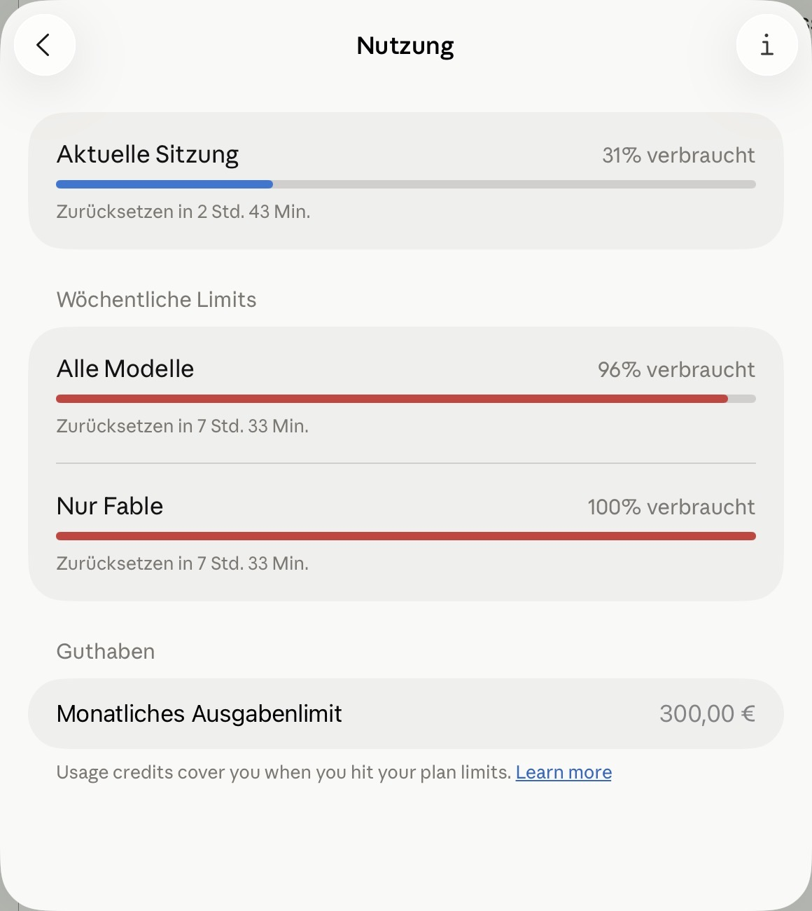

Remote Remoting
A fast little AI model I'd grown to like was about to stop being free. So I spent what I thought was its last free night wringing every drop out of it — a dozen coding sessions running at once on my Mac, and me steering eight of them from my phone while the laptop worked away in another room.
I didn't build a clever remote-launch tool to pull that off — not for the swarm, anyway; that part came later. It started with something much smaller: one setting I flipped, and a habit I already had.
The model on a countdown
For a couple of weeks I'd had Claude Fable 5 — a new, unusually fast AI coding model, handed out on a promotion: free to use, within a slice of my weekly allowance. I liked it. Quick tools change how you work — you stop rationing your ideas and just try them.
Then the banner appeared: the free window was closing. Fable wasn't going away — it was moving from included in my weekly plan to a paid extra, billed per use on top of everything else. Included today, an expensive add-on tomorrow. So the smart move was obvious: drain the free allowance while it still counted as free.
A worker per idea
Here's how I actually work. My AI agents don't live in a chat box; they live in the terminal — the plain text window where you drive programs by typing commands. And I don't keep just one open. Every idea I get spins up its own terminal tab, a fresh agent chewing on its own problem — on a busy evening, a dozen at once. (Sometimes I launch one straight from Obsidian, my notes app, with a single keystroke.)
The catch was always leaving the desk. The company that makes these agents ships a phone app that connects to a running session — but I'd treated it as a way to look in on one, like watching through glass, not as a way to take the wheel.
A setting, not a tool
Then I found the setting — and this is the honest heart of it, less heroic than the intro makes it sound. One config option: turn on remote control automatically, for every new session. I flipped it once.
That was the whole trick. I never built a way to launch sessions from my phone; I didn't need to. I kept starting them exactly as before — at my desk, a tab per idea — but now each one, the instant it existed, was drivable from my pocket. No tool. A checkbox. The workers I started at the desk simply came with me when I walked away.
A dozen at once
So on Fable's countdown night, I opened the floodgates. A tab, then another, then another — each agent landing on its own problem, each appearing in the phone app as its own connected room. At the peak my Mac ran around fifteen at once, and I was steering eight to ten of them from my phone, nowhere near the keyboard.
And none of it was make-work to run up the meter. I'd lined these sessions up on purpose — each one chewing a real task from the weeks ahead. The goal was simple and a little ruthless: reach 100%, leave no free capacity on the table, come out the other side with the backlog already ploughed through. Free tokens, turned into weeks of real progress.
Because on the paid meter, Fable isn't cheap. I keep a budget of about €300 a month for that kind of pay-as-you-go usage, and two of my heaviest sessions alone — a stubborn five-year-old bug, a payment-system rebuild — would swallow the entire €300 between them. A free night of Fable wasn't loose change; it was the last time I'd get to run it this hard without watching a money counter tick.
And the meter agreed: Fable at a flat 100% used, my whole week across every model at 96%. Drained dry.

The receipt: Fable drained to 100%, my whole week at 96%, and the €300 monthly credit ceiling waiting underneath.
The reprieve
And then I got lucky. A rival lab, OpenAI, announced a new model — and that Thursday evening, at eight o'clock, my weekly limits reset early. Coincidence or competitive reflex, I can't tell you; I just know Fable was suddenly included again. Which means that as I write this, I'm doing it all over: I have until Sunday at eight to drain it a second time. The countdown restarted, and I'm racing it again.
Which is the quiet joke of the whole thing: Fable never really has one last night. The window shuts, a reset flings it open, and I'm back — a swarm of sessions, a phone in my hand, at it all over again.
And here's the part I couldn't have scripted: while I was writing this very post, they did it again. A banner slid down — Fable's free window, extended another week, now through the 19th. Here we go again. The joke keeps rewriting itself faster than I can finish the paragraph about it.
I lock my Mac when I leave
The setting was enough for the swarm. But it left me wanting one more thing: to start a session in a specific project, on command, without walking to the desk — so I could line up work from anywhere. So I sat down with my AI to build a little launcher for it. That's where the wall appeared.
I lock my screen when I step away — office habit, and just sensible. My first launcher hung the moment the screen was locked.
The reason turned out to be a small, stubborn detail. That launcher opened each session in a new tab — and it did that by faking the keyboard shortcut a human would press for a new tab. But macOS, quite rightly, refuses to let a program fake keystrokes while the screen is locked. It's a security wall: no invisible hands typing on a locked machine. So the launcher froze, waiting to press a key it was never allowed to press.
There was a "safe" official alternative that skipped the fake keystroke — but it stopped one step short: it typed my instruction and then waited, politely, for a human to press Enter. On a locked Mac in another room, nobody was going to. Reliable but inert, versus runs-but-fragile.
Open a window, not a tab
The fix, once we found it, was almost boring — which is usually the sign it's right.
Skip the tab. Open a new window instead. A new window needs no faked keystroke, no special permission, no unlocked screen — it's a plain, direct instruction to the terminal. And a window running my agent auto-submits its first instruction and gets straight to work, exactly like sitting down and typing would.
I locked the Mac on purpose to test it — really locked, verified locked — and fired the launcher. A few seconds later my phone buzzed: a new session, connected, sitting in the exact project folder I'd named, greeting me. The laptop's screen was dark and locked the whole time.
That's the sentence I kept turning over: I can lock my Mac, walk away, and still open a brand-new session on it, wherever I want, and pick it up on my phone.
The sessions I couldn't hang up
One catch surfaced, the way catches do. The normal way to close a session — type /exit — didn't work over the phone connection. It would say "exiting" and then just… sit there, alive. The remote link kept it breathing. With a dozen of them open, "how do I actually close one of these" stopped being academic.
The honest answer was blunt: end the underlying program directly. And that pointed at a nicer idea. Instead of hunting down each session later to shut it off, the launcher should hand me the off-switch at the moment it opens the door — like being given the room key at the same time as the room number. So now, every time it starts a session, it prints back exactly how to close that one.
It also means one "orchestrator" session could open others and close them on its own — a parent that owns its children's whole lives. But that's a story for another night.
So what
Building tools to build tools — that's what I do. When I hit an obstacle, I don't route around it. I see it as an opportunity to turn every traffic light on the road green.
Because look at the alternative. Get up off the sofa, walk to the desk, open a tab, start a session — then walk all the way back to where the real work happens now: the sofa, on the phone. That's the cycle I run every time an idea strikes. So I replaced it with a script: it does the walking, and I never need to get up. Teach the machine the boring part once, and what's left in your hands is the ideas.
And I didn't build it in one step with a goal in mind. It was a back-and-forth — spotting the obstacle, building and testing the fix, then the next obstacle, the next fix. That's the part worth stealing: you don't need the finished idea up front. You need a small thing that works, an itch whenever something is still manual, and the willingness to keep pulling.
The little machine I built to make the most of nights like this is here to stay — and it works with any model, on a locked screen, with my phone in hand.
Resources — steal it
First, the honest disclaimer: for the swarm part, you may not need my script at all. Claude ships an official command for exactly this — run
claude remote-control --name "Shows up in the Claude app"
inside the folder you want to work in, and it stays alive as a little always-on server. From your phone you can then open session after session in that folder — up to around thirty at once — all without touching the keyboard again. If you set that up before you leave the desk, it covers the whole "dozen agents from the sofa" story on its own.
The one thing it can't do is what my script is for: it's married to the single folder you started it in. My launcher's whole reason to exist is picking a folder on command — starting a brand-new session in any project, from anywhere, without walking back. If you only ever swarm inside one project, use Claude's built-in command and skip the rest of this section. If you want to launch into any folder on a whim, read on.
Here's the script — the whole thing. What it does: opens a Claude session in any folder you name, switches on remote control so it turns up on your phone, and prints back the single command that closes it again. It opens a window instead of faking a keystroke, which is why it runs even with the Mac locked. Copy it, make it runnable, point it at a folder.
The launcher:
#!/bin/bash
# handoff-to-remote-session.sh — open a NEW Terminal window and start a
# Claude Code session with Remote Control enabled in a given workspace, so the
# session shows up in the Claude phone app and can be driven from anywhere.
# It prints back the command to terminate that session — the off-switch, at launch.
#
# Usage: handoff-to-remote-session.sh --workspace <dir> [PROMPT]
set -euo pipefail
WORKSPACE=""
PROMPT=""
while [ $# -gt 0 ]; do
case "$1" in
--workspace) WORKSPACE="${2:-}"; shift 2 ;;
--workspace=*) WORKSPACE="${1#*=}"; shift ;;
*) PROMPT="$1"; shift ;;
esac
done
if [ -z "$WORKSPACE" ]; then
echo "error: --workspace <dir> is required" >&2
exit 2
fi
if [ ! -d "$WORKSPACE" ]; then
echo "error: workspace directory does not exist: $WORKSPACE" >&2
exit 2
fi
# --remote-control goes LAST (bare flag) so its optional [name] can't eat the prompt.
if [ -n "$PROMPT" ]; then
CLAUDE_CMD="claude $(printf '%q' "$PROMPT") --remote-control"
else
CLAUDE_CMD="claude --remote-control"
fi
# A launcher file sidesteps the nested-quoting mess of paths-with-spaces.
LAUNCH="$(mktemp /tmp/claude-launch.XXXXXX)"
cat > "$LAUNCH" <<EOF
cd $(printf '%q' "$WORKSPACE")
${CLAUDE_CMD}
EOF
QL="$(printf '%q' "$LAUNCH")"
# Note which sessions exist BEFORE we open ours, so we can pick ours out after.
BEFORE="$(pgrep -f -- '--remote-control' 2>/dev/null | sort || true)"
# A new WINDOW — no faked keystroke, so this works even with the screen locked.
osascript -e "tell application \"Terminal\" to do script \"bash ${QL}\""
osascript -e 'tell application "Terminal" to activate' >/dev/null 2>&1 || true
# Find the session we just opened and hand back its off-switch.
CHILD_PID=""
for _ in $(seq 1 40); do
AFTER="$(pgrep -f -- '--remote-control' 2>/dev/null | sort || true)"
CHILD_PID="$(comm -13 <(printf '%s\n' "$BEFORE") <(printf '%s\n' "$AFTER") | grep -E '^[0-9]+$' | head -1 || true)"
[ -n "$CHILD_PID" ] && break
sleep 0.25
done
if [ -n "$CHILD_PID" ]; then
printf 'SESSION_PID=%s\n' "$CHILD_PID"
printf '# /exit does NOT work over remote control. To close this session:\n'
printf '# kill %s (if it lingers: kill -9 %s)\n' "$CHILD_PID" "$CHILD_PID"
fi
To use it: save it, make it runnable once (chmod +x handoff-to-remote-session.sh), and call it with a folder and an opening instruction:
./handoff-to-remote-session.sh --workspace ~/projects/my-app "start reviewing today's changes"
A window opens, a session boots in my-app, it starts working — and it shows up on your phone, ready to steer. The last line it prints tells you exactly how to close it.